Xiaohao Zhou
Chongqing University (Project 985)
-
Academics: GPA: 3.75/4.00 (Rank: 2/53) | English: CET-6 (512)
Core Courses: Advanced Mathematics (96), Probability and Statistics (92), Discrete Mathematics (97) - Publication: one first-author manuscript prepared for submission to TOSEM (CCF-A)
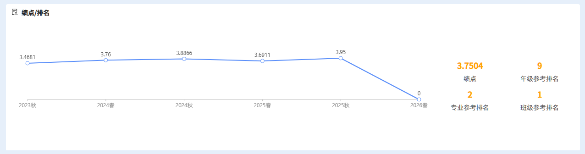
Research Experience
- Leading research on semantic code search, with a focus on how LLMs can better support cross-domain code retrieval.
- Proposed the AbsMatcher framework, a two-stage method combining semantic abstraction and LLM-based comparative reranking.
- Conducted empirical analysis on retrieval effectiveness and efficiency, showing meaningful gains in both ranking quality and cost reduction.
- Prepared a first-author manuscript based on this project for submission to TOSEM.
- Conducted a systematic study of GUI agents, reproduced Show-UI, Agent S, and OpenApps, and advanced several research ideas through experimental validation.
- Surveyed and reproduced code-agent research and contributed to idea validation, experiments, and paper writing; participated in a MoE-LoRA study addressing bottlenecks in multilingual program repair as the second-listed co-first author.
- Supported an Ant Foundation research proposal by drafting technical content and producing figures.
Publications
AbsMatcher: LLM-Based Semantic Abstraction and Comparative Reranking for Cross-Domain Code Search
Problem
Code search aims to retrieve code snippets from the codebase that are semantically related to a given natural language query. Pre-trained language models (PLMs) have shown effective performance by embedding query and code into a shared vector space. However, the PLM-based method struggles in cross-domain code search (CDCS), where a target domain (e.g., specialized programming languages) suffer from critical data scarcity issues.
Related Work
- RAPID: which performs domain adaptation for code search by generating pseudo-labeled synthetic pairs
- CodeBridge(SOTA): which leverages an LLM to generate code and comments for a given query and target code snippet, respectively. It then alleviates the cross-domain challenge by fusing the semantic information from three perspectives: query-code, code-code, and query-comments .
- Limitation: These methods heavily depend on target-domain training data or complex multi-view fusion architectures, limiting their transferability and efficiency under strict zero-shot or CDCS settings without retraining.
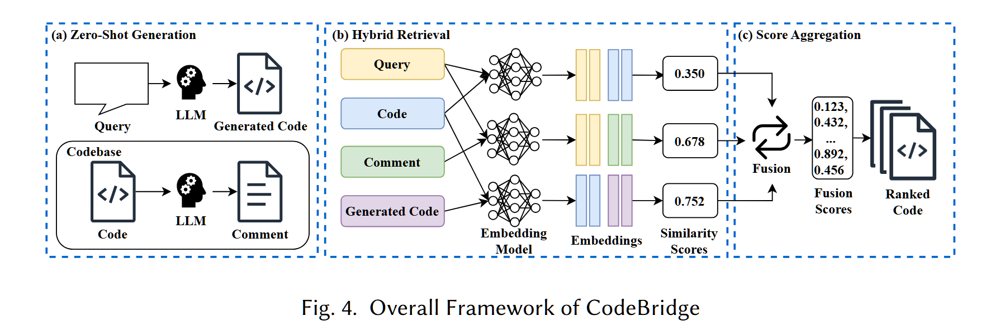
Motivation
- Existing code search models transfer poorly to cross-domain settings, where natural-language queries and code snippets often exhibit a substantial semantic gap and target-domain supervision is scarce.
- Data generation methods can provide additional training data, but each transfer to a new target domain still requires another round of fine-tuning, resulting in substantial time costs and reduced practical usability.
- Recent LLM-based zero-shot methods reduce the need for fine-tuning, but still rely on multi-view embedding fusion, which introduces extra computation and unstable fusion effects.
- Even current state-of-the-art methods still achieve limited accuracy. We believe this is because they mainly use LLMs for semantic extraction, without fully exploiting the broader strengths of LLMs.
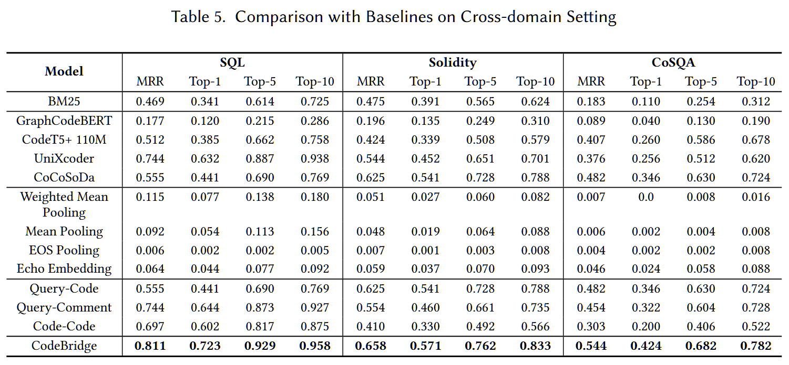
Method
Stage 1: Semantic Abstraction
AbsMatcher first abstracts source code into query-aligned semantic descriptions, producing a retrieval representation that is more robust to domain shift.
Stage 2: Comparative Reranking
It then applies LLM-based comparative reranking over top candidates to improve final ranking quality through fine-grained pairwise judgments.

Experiments & Results
- AbsMatcher achieves the best overall retrieval performance on all three cross-domain benchmarks: CoSQA, SQL, and Solidity.
- Its MRR reaches 0.618, 0.913, and 0.811, outperforming the strongest baseline CodeBridge by 7.4%, 10.2%, and 15.3%, respectively.
- Even the first-stage CodeAbs Retriever alone already surpasses CodeBridge, showing that semantic abstraction itself is a strong retrieval representation for CDCS.
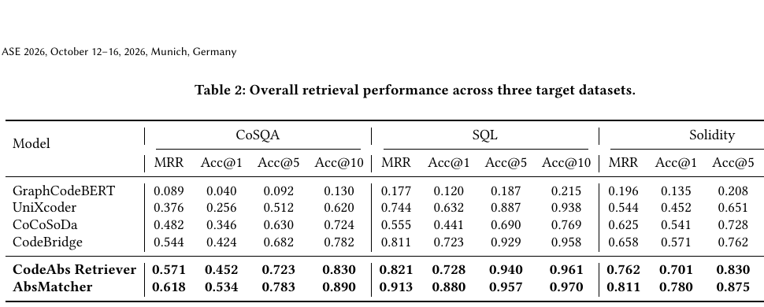
- The key finding is that a single CodeAbs representation can cover all Top-1 wins of CodeBridge’s three retrieval views, while also adding new correct retrievals.
- Compared with the combined three-view success set of CodeBridge, CodeAbs gains +7 additional Top-1 wins on CoSQA, +66 on SQL, and +95 on Solidity.
- This means CodeAbs preserves multi-view complementarity in a simpler one-pass retriever, reducing Stage-I computation to roughly 1/3 of CodeBridge.

- The second stage is not specific to AbsMatcher. Applying the same comparative reranking strategy to CoCoSoDa and CodeBridge also yields clear gains.
- For AbsMatcher itself, reranking improves average head-ranking quality by +10.4 points on Acc@1 and +3.0 points on Acc@3 across the three datasets.
- The same trend appears on other retrievers, indicating that comparative reranking is a general plug-in improvement for code search models.
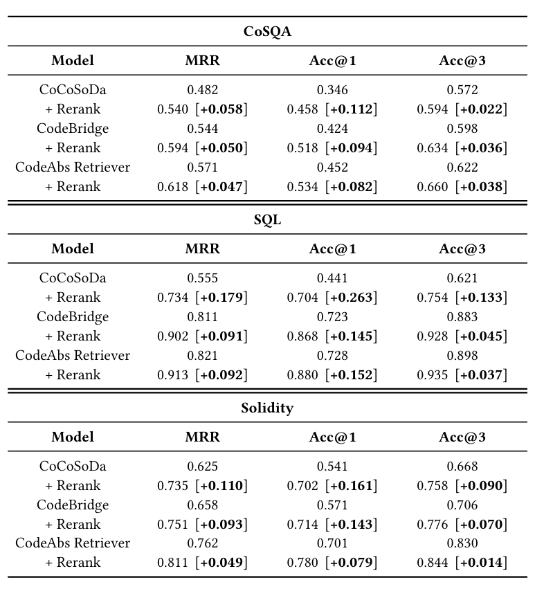
- Candidate pool size: Acc@1 improves as the reranking pool grows, but the gain saturates after K = 15. In practice, K = 10 offers the best efficiency, while K = 15 gives the strongest mean Acc@1.
- Effect of Code : removing the original code snippet consistently hurts retrieval. Keeping both the generated abstraction and the raw code improves MRR by +4.7pp on CoSQA, +4.2pp on SQL, and +6.1pp on Solidity.
- Latency trade-off: Stage-I is simpler than CodeBridge and uses only one embedding space; Stage-II remains bounded, with mean reranking time rising from 0.449s at K = 10 to 16.623s at K = 25.
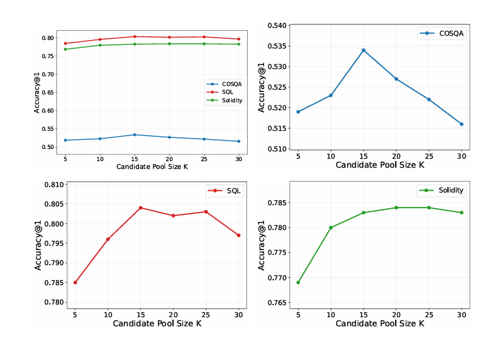
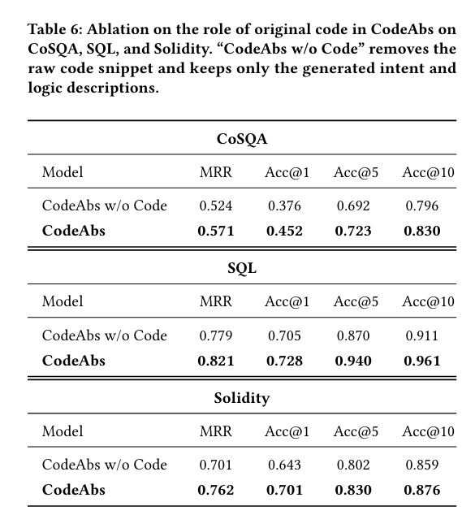
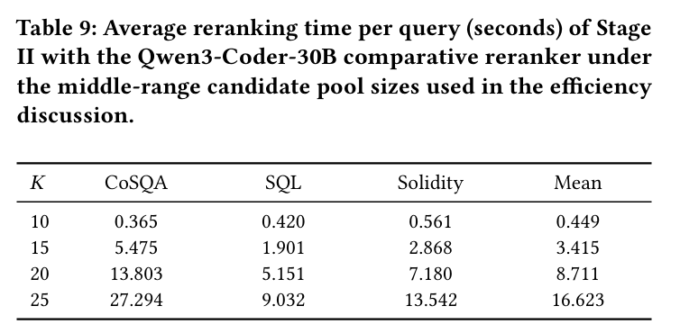
Projects
MiniClaw
GitHubA learning-oriented AI agent system for cross-device interaction and task automation, enabling mobile-to-PC control.
- Built a locally deployed agent system that allows users to control computers from mobile devices through natural language.
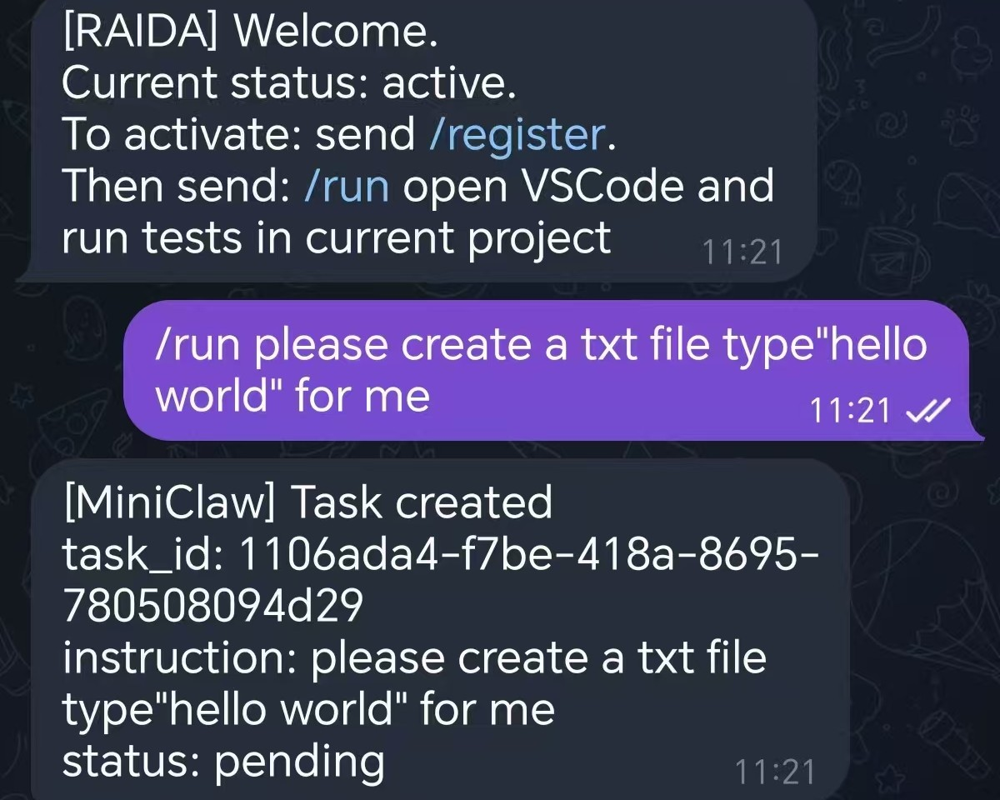
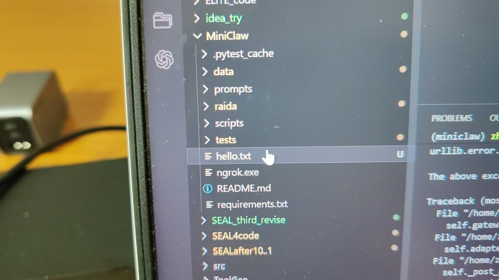
Architecture Comparison with OpenClaw
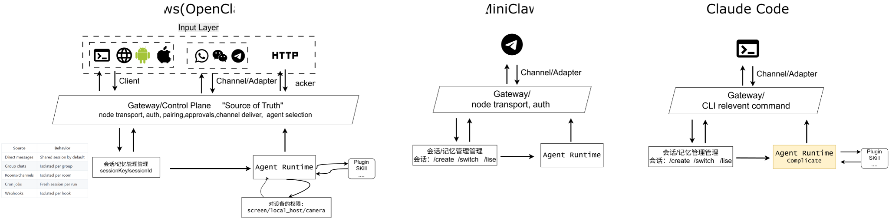